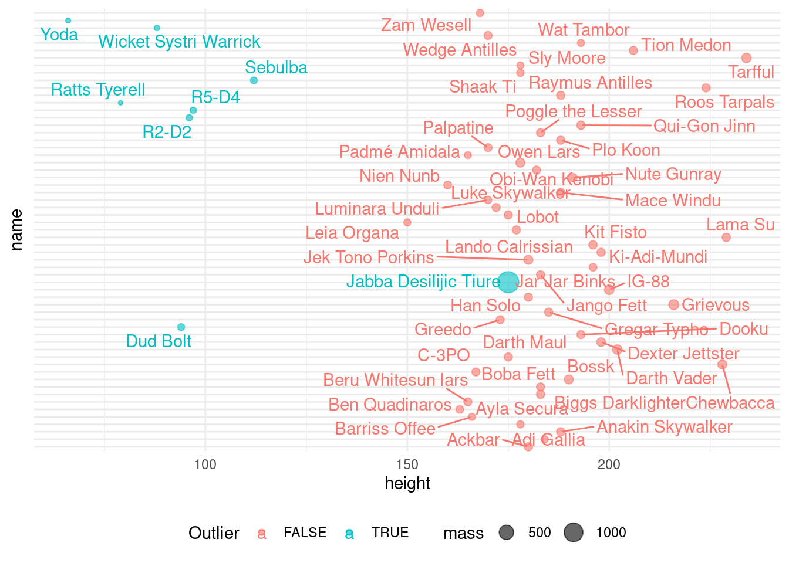

library(tidyverse)
library(ggrepel)
library(robustbase)
library(robustX)Detecção Outliers Multivariados
BACON
Blocked Adaptative Computationally Efficient Outlier (BACON)
df <- starwars[c(2)] |> filter (!is.na(height))
bacon <- df |> BACON() rank(x.ord[1:m,] >= p ==> chosen m = 4
MV-BACON (subset no. 1): 4 of 81 (4.94 %)
MV-BACON (subset no. 2): 20 of 81 (24.69 %)
MV-BACON (subset no. 3): 53 of 81 (65.43 %)
MV-BACON (subset no. 4): 64 of 81 (79.01 %)
MV-BACON (subset no. 5): 68 of 81 (83.95 %)
MV-BACON (subset no. 6): 71 of 81 (87.65 %)
MV-BACON (subset no. 7): 72 of 81 (88.89 %)
MV-BACON (subset no. 8): 72 of 81 (88.89 %)df_final <- cbind(bacon$subset, filter(starwars[c(1,2)], !is.na(height))) |>
mutate ("bacon$subset" = !`bacon$subset`)
df_final <- cbind(bacon$dis, df_final)Visualizando as distâncias e subset
df_final |> ggplot(aes(x = height, color=`bacon$subset`)) + geom_dotplot()df_final |> ggplot(aes(x = height, color= `bacon$subset`)) +
geom_point(aes(y = `bacon$dis`, size=`bacon$dis`, shape=`bacon$subset`)) +
guides(colour = guide_legend("Outlier"),
size = guide_legend("Distancia"),
shape = guide_legend("Outlier"))df_final |> ggplot(aes(x = height, y = name, color= `bacon$subset`)) +
geom_point() +
geom_text_repel(aes(label = name)) +
theme_minimal() +
theme(legend.position = "bottom", axis.text.y = element_blank()) +
guides(colour = guide_legend("Outlier"))